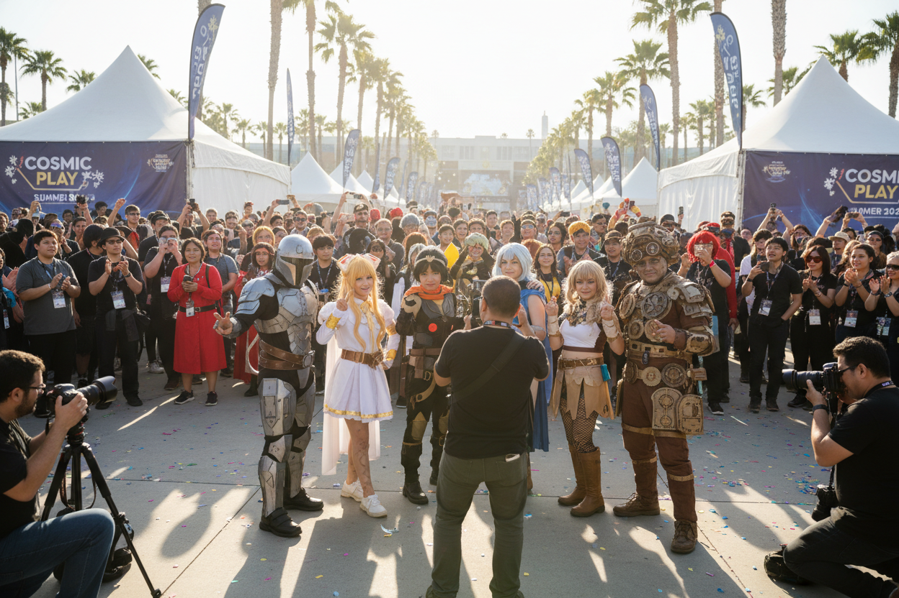
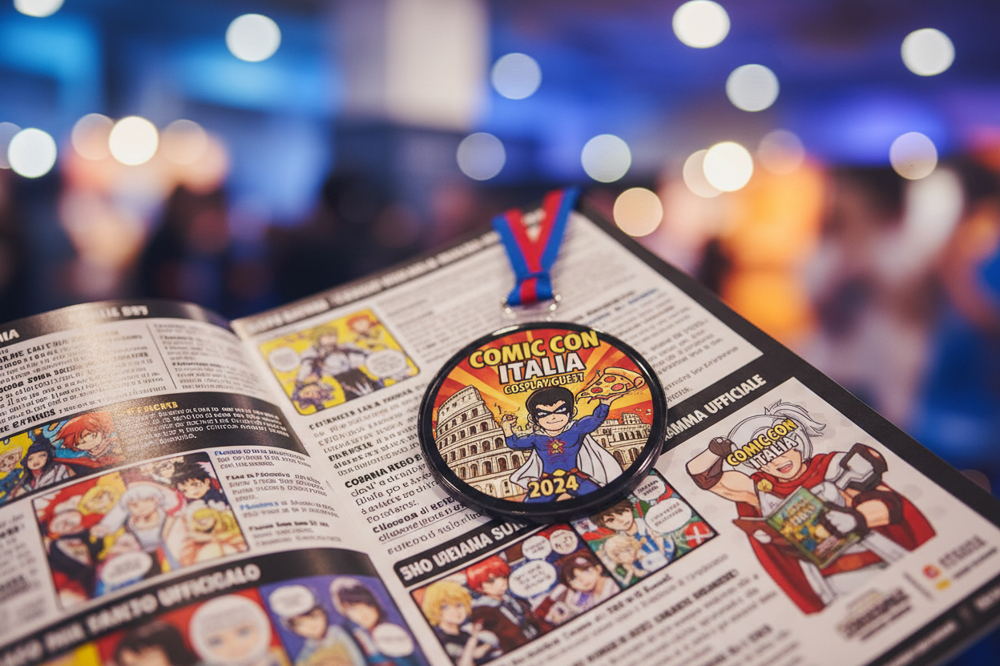

L'Italia ospita alcune delle fiere cosplay più importanti d'Europa. Scopri quali sono gli appuntamenti da non perdere.
Lucca Comics & Games
È l'evento regina. Ogni anno trasforma un'intera città medievale in un paradiso per cosplayer, attirando centinaia di migliaia di visitatori.

Oltre a Lucca, eventi come Romics a Roma e Milan Games Week sono diventati tappe fondamentali per chiunque voglia vivere appieno la community.
L'Atmosfera delle Fiere
Partecipare a una fiera non significa solo mostrare il proprio costume, ma immergersi in un'atmosfera di festa e condivisione unica.

Ogni evento ha la sua anima, dalle grandi kermesse cittadine ai raduni più intimi nei parchi storici.